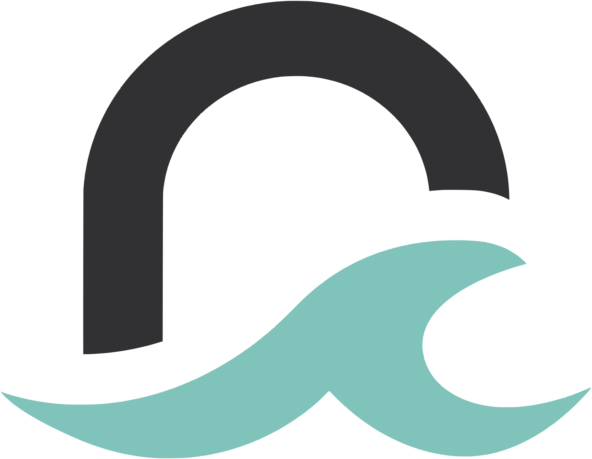

Turning brain drain into brain gain
Από το brain drain στο brain gain
Talent leaving Greece isn’t the end of the story.
Η φυγή ταλέντων από την Ελλάδα δεν είναι το τέλος της ιστορίας.
RestartGen is an independent, non-profit initiative of young Greek scientists and professionals abroad. Together with people living in Greece, we look into why brain drain persists and propose ways to reverse it.
Το RestartGen είναι μια ανεξάρτητη, μη κερδοσκοπική πρωτοβουλία νέων Ελλήνων επιστημόνων και επαγγελματιών του εξωτερικού. Μαζί με ανθρώπους που ζουν στην Ελλάδα, εξετάζουμε γιατί το brain drain συνεχίζεται και προτείνουμε λύσεις για τη μεταστροφή του.

What we do
Τι κάνουμε
Research the causes
Ερευνούμε τις αιτίες
We study the economic, social and political reasons people leave, and what their departure costs the country, then publish what we find.
Μελετάμε τα οικονομικά, κοινωνικά και πολιτικά αίτια της φυγής και τις συνέπειές της για τη χώρα, και δημοσιεύουμε τα αποτελέσματα.
Join the public debate
Συμμετέχουμε στον δημόσιο διάλογο
We write position papers and speak up through articles, events and interventions on the policies that affect us.
Συντάσσουμε θέσεις και παρεμβαίνουμε με άρθρα, εκδηλώσεις και δράσεις για τις πολιτικές που μας αφορούν.
Build a community
Χτίζουμε μια κοινότητα
We bring together young Greeks working abroad, and those who came back, to compare experiences and ideas.
Φέρνουμε κοντά νέους Έλληνες που εργάζονται στο εξωτερικό, αλλά και όσους επέστρεψαν, για να ανταλλάξουμε εμπειρίες και ιδέες.
If things are getting better, why are people still leaving?
Αν τα πράγματα πάνε καλύτερα, γιατί οι άνθρωποι συνεχίζουν να φεύγουν;
Greek brain drain needs a fresh look: not the view from the crisis years, but the view of the generation living it today.
Το ελληνικό brain drain χρειάζεται μια νέα ματιά: όχι τη ματιά των ετών της κρίσης, αλλά τη ματιά της γενιάς που το ζει σήμερα.
Three areas behind the decision to leave
Τρεις άξονες πίσω από την απόφαση της φυγής
More on our focus areasΠερισσότερα για τους θεματικούς άξονες- Corruption, meritocracy, transparency and trust in institutions
- Justice: delays, separation of powers, impunity
- The state and the citizen: bureaucracy, digitalisation, health and education
- Social values and rights: inequality, gender-based violence
- Διαφθορά, αξιοκρατία, διαφάνεια και εμπιστοσύνη στους θεσμούς
- Δικαιοσύνη: καθυστερήσεις, διάκριση εξουσιών, ατιμωρησία
- Σχέση Κράτους-πολίτη: γραφειοκρατία, ψηφιοποίηση, υγεία και παιδεία
- Κοινωνικές αξίες και δικαιώματα: ανισότητες, έμφυλη βία
- Sustainable growth, economic diversification, investment, entrepreneurship and tax
- Low wages and limited prospects for progression
- Workers’ rights, such as leave and remote work
- Quality of the working environment and job satisfaction
- Βιώσιμη ανάπτυξη, οικονομική διαφοροποίηση, επενδύσεις, επιχειρηματικότητα και φορολογία
- Χαμηλοί μισθοί και έλλειψη προοπτικών ανέλιξης
- Εργασιακά δικαιώματα, π.χ. άδειες και τηλεργασία
- Ποιότητα εργασιακού περιβάλλοντος και εργασιακή ικανοποίηση
- Insufficient resources, infrastructure and research funding
- Limited international outlook
- Academic staff: appointments and salaries
- Student intake, brain waste and links to the job market
- Ανεπαρκείς πόροι, υποδομές και χρηματοδότηση έρευνας
- Έλλειψη εξωστρέφειας
- Μέλη ΔΕΠ: διορισμοί και μισθοί
- Αριθμός εισακτέων, brain waste και διασύνδεση με την αγορά εργασίας
Find your way around
Εξερευνήστε
Meet the people behind RestartGen and our working groups.
Γνωρίστε τους ανθρώπους πίσω από το RestartGen και τις ομάδες εργασίας μας.
Our articles, event announcements and further reading on brain drain.
Τα άρθρα μας, ανακοινώσεις εκδηλώσεων και περαιτέρω υλικό για το brain drain.
Ask a question, propose a collaboration or tell us you’d like to join.
Κάντε μια ερώτηση, προτείνετε μια συνεργασία ή πείτε μας ότι θέλετε να συμμετάσχετε.
Are you part of Greece’s brain drain?
Είστε μέρος του ελληνικού brain drain;
We’re looking for people who live and work abroad, or who worked abroad for at least two years and have since returned to Greece, and who want to help shape the policies that affect them.
Αναζητούμε ανθρώπους που ζουν και εργάζονται στο εξωτερικό, ή που εργάστηκαν στο εξωτερικό τουλάχιστον δύο χρόνια και επέστρεψαν στην Ελλάδα, και θέλουν να συνδιαμορφώσουν τις πολιτικές που τους αφορούν.